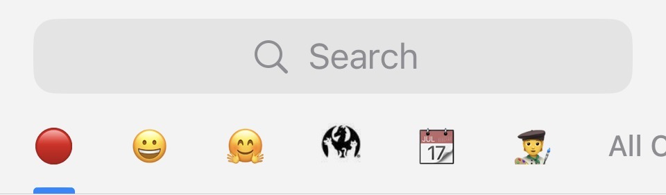

Dec 30, 2025
While I'm procrastinating ruminating on my end-of-year review, I thought it'd be fun to show off how I organize
Telegram.

My chat organization scheme has developed naturally over time, but if I had to come up with principles that I use to organize them:
| Title | Include | Exclude | Purpose |
|---|---|---|---|
| 🔴 | Contacts and Groups | Muted, Read, Archived | Unread messages. Great for triaging and recovering lost notifications after you've opened Telegram. |
| 😀 | Contacts | Muted, Archived | Direct messages. |
| 🤗 | Manually-curated groups | N/A | Group chats that I pay attention to. I pin an even smaller number of group chats which I try and read every message in. |
$CON |
Manually curated | N/A | Relevant chats for whatever convention is coming up. I pin the convention's announcement channel, group chat with roommates, and DMs with close friends that I've made plans with. The rest are party chats during the convention. |
| 📆 | Manually-curated groups | N/A | Event chats: parties, meetups, and recurring events. I pin event chats for upcoming events I plan to attend, and remove them a few days after they're done. |
| 🧑🎨 | Manually curated | N/A | Artists that I'm commissioning. |
| All chats | N/A | N/A | The Telegram built-in folder. I hardly ever look at this, except to move chats into one of my other folders. |
| 🤖 | Manually curated | N/A | Developer chats for the Telegram bot that I maintain. |
| 📣 | Manually-curated channels | N/A | Announcement channels for artists and conventions. |
| 🍑 | Manually curated | N/A | Guess ;) |